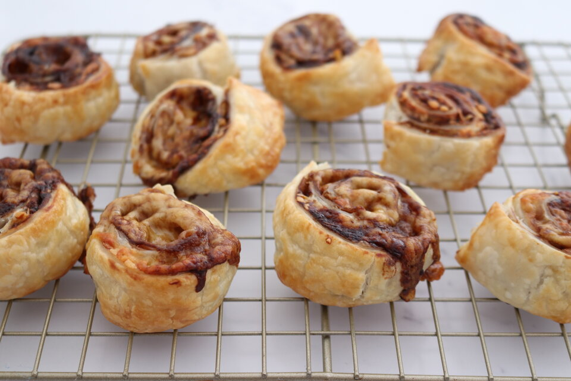

Vegemite Scrolls

Description
A Vegemite scroll is a savoury Australian baked food. It consists of a spiral of baked bread similar to a pain aux raisins with Vegemite and cheese in place of raisins.
Ingredients
- 3 sheets puff pastry, thawed
- 6 tablespoons vegemite
- 2 cups grated cheddar cheese
- 1 egg, beaten for egg wash
Steps
- Preheat a fan forced oven to 200°C & line 3 baking trays with baking paper.
- Place the pastry sheets onto a chopping board or clean bench. Spread the vegemite over each pastry sheet & then top with grated cheese.
- Gently roll up the sheets and brush with the egg wash. Cut into 8 even portions. Place scrolls, cut-side up, onto the baking trays.
- Bake for 16-18 minutes or until pastry is golden and cheese has melted.
- Allow the scrolls to cool on trays for 5 minutes before transferring to a wire rack.
- Enjoy :)
Home